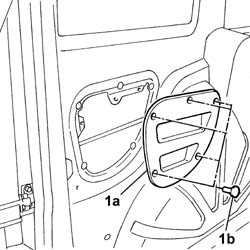

5540A42 tail light panel one left or right r r
- Path
- Procedures > 55 ELECTRICAL EQUIPMENT > 5540 EXTERIOR LIGHTING > 5540A lighting > 5540A42 tail light panel one left or right r r
- Kind
- repair procedure (removal / refitting; the operation number is the code)
- Applies to
- all engines; all production periods
- Interactive page
- https://sloeber94.github.io/elrnDB-fDbl/en/#/2584931
Applies to: all engines; all production periods
 Removing
Removing
 Refitting
RefittingDisconnect the battery negative terminal.
Applies to: all engines; all production periods; only with equipment: Doblò trim level
Applies to: all engines; all production periods; only with equipment: Cargo trim level
1. Remove the panel (1a) from the studs (1b).

Applies to: all engines; all production periods; only with equipment: Cargo trim level
Op. 7210E68 R.R. REAR BUMPER - SIDE ELEMENT
Op. 5540A44 REAR LIGHT CLUSTER (ONE), LEFT OR RIGHT - R.R.
Op. 5540A43 REAR LIGHT CLUSTER TRIM (ONE) LEFT OR RIGHT - R.R. WITH INTERFERING COMPONENTS REMOVED
Applies to: all engines; all production periods
Refitting
RemovingOp. 5540A43 REAR LIGHT CLUSTER TRIM (ONE) LEFT OR RIGHT - R.R. WITH INTERFERING COMPONENTS REMOVED
Applies to: all engines; all production periods; only with equipment: Cargo trim level
Fit the panel and secure it with the studs.
Applies to: all engines; all production periods; only with equipment: Doblò trim level
Applies to: all engines; all production periods; only with equipment: Doblò trim level
Connect the battery negative terminal.